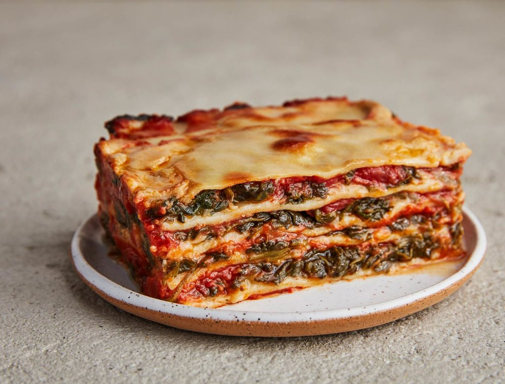
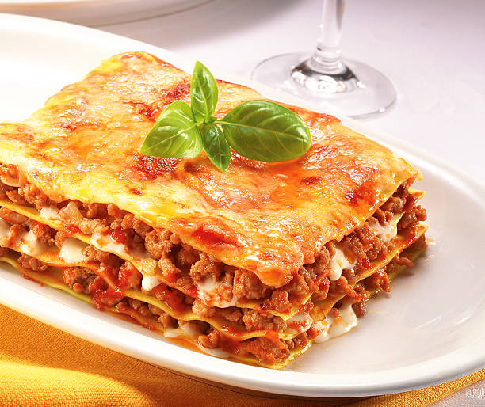

Lasagna!

Description
Making lasagna can be time-consuming, but the results are well worth the
wait. You'll find a detailed ingredient list and step-by-step instructions
in the recipe below, but let's go over the basics:

Ingredients
-
Meat: This super meaty lasagna has sweet Italian sausage and lean ground
beef.
-
Onion and garlic: An onion and two cloves of garlic are cooked with the
meat to add tons of flavor.
-
Tomato products: You'll need a can of crushed tomatoes, two cans of
tomato sauce, and two cans of tomato paste.
-
Sugar: Two tablespoons of white sugar add subtle sweetness and enhance
the flavor of the sauce.
-
Spices and seasonings: This lasagna recipe is flavored with fresh
parsley, dried basil leaves, salt, Italian seasoning, fennel seeds, and
black pepper.
- Lasagna noodles: Use store-bought or homemade lasagna noodles.
-
Cheeses: Parmesan, mozzarella, and ricotta cheese make this lasagna
extra decadent.
-
Egg: An egg helps bind the ricotta so it doesn't ooze out of the lasagna
when you cut into it.

How to Make Lasagna Step-By-Step
- Make the meat sauce.
- Cook the noodles.
- Make the ricotta mixture.
- Layer the lasagna according to the recipe instructions.
- Cover with foil and bake.
- Let the lasagna rest before serving.
Nutrition Facts (per serving)
| Calories |
Fat |
Carbs |
Protein |
448 |
21g |
37g |
30g |
Show Full Nutrition Label
Next Recipe